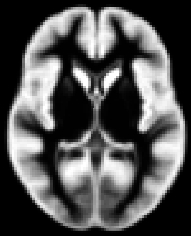
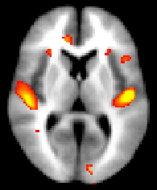

Contents
- Introduction
- User Guide
Contents
- Running FSL-VBM - Overview
-
Running FSL-VBM - In detail
- A - Prepare your data for the FSL-VBM study
- B - Extracting brain information: fslvbm_1_bet
- C - Creating the template: fslvbm_2_template
- D - Processing the native GM images: fslvbm_3_proc
- E - Displaying your FSL-VBM results
- E1 - Displaying TFCE-based thresholding results
- E2 - Displaying cluster-based thresholding results
- What's new in this version
Running FSL-VBM - Overview
Running FSL-VBM involves a few simple steps:
- prepare your T1-weighted images in the right format
fslvbm_1_bet - carry out brain extraction on all T1 images
fslvbm_2_template - create the study-specific symmetric grey matter template
fslvbm_3_proc - register all the grey matter images to the template, modulate and smooth them with different kernel sizes and finally runs an initial GLM analysis for qualitative evaluation
randomise - carry out voxelwise GLM analysis using permutation testing
Running FSL-VBM - In detail
A - Prepare your data for the FSL-VBM study
a) Place all your T1-weighted data in your FSL-VBM directory. For instance:
mkdir my_fsl_vbm
Then copy into your FSL-VBM directory all of your subjects' T1 images, giving each subject's T1 image a different name, preferably with each prefix corresponding to each of your group, for example:
CON_2304.nii.gz
CON_2878.nii.gz
CON_3456.nii.gz
CON_4133.nii.gz
CON_4690.nii.gz
PAT_2042.nii.gz
PAT_2280.nii.gz
PAT_2632.nii.gz
PAT_3193.nii.gz
PAT_4134.nii.gz
PAT_5357.nii.gz
PAT_6659.nii.gz
b) If you have more than one group and the number of subjects in each is not the same, choose (at random) among the biggest group(s) the images that you will use to create the study-specific template, with the same number as of the smallest group (in order to create an unbiased template - see below for further explanation). Once you've chosen which T1 images to keep to build the template, put all the selected names of exams in a file called template_list in your FSL-VBM directory.
All your different populations included in this study MUST be represented in the template construction.
For instance, as we have only 5 controls for 7 patients, we have to select 5 patients out of the 7:
for g in CON_2304.nii.gz CON_2878.nii.gz CON_3456.nii.gz CON_4133.nii.gz CON_4690.nii.gz PAT_2042.nii.gz \
PAT_2632.nii.gz PAT_3193.nii.gz PAT_4134.nii.gz PAT_6659.nii.gz; do
echo $g >> template_list
done
c) At this point you should have a quick look at all your data to check that all subjects' structural images are what you expected:
slicesdir `imglob *`
The imglob command lists all of your input images. The slicesdir command takes the list of images and creates a simple web-page containing snapshots for each of the images. Once it has finished running it tells you the name of the web page to open in your web browser, to view the snapshots. Have a careful look.
d) It's a good idea to consider your cross-subject statistical model before you run the FSL-VBM analysis. So you should at this point create your design.mat and design.con in your FSL-VBM directory; see the randomise manual.
WARNING!!! The order of the rows in your design.mat model MUST match the order of your images when doing an 'ls' command in your FSL-VBM directory.
B - Extracting brain information: fslvbm_1_bet
The first FSL-VBM script moves all your input images into a new struc subdirectory (and adding "_struc" to the end of each filename). It then runs brain extraction on the images. You can either use the -b option to get default BET behaviour, or use the -N option if your images include a lot of neck (which most of the time confounds the BET preprocessing).
To run this first script, just type:
fslvbm_1_bet -b
or
fslvbm_1_bet -N
in your FSL-VBM directory.
At the end of this step, it is once again worth CHECKING the brain images (*_brain.*) in your struc directory by loading the new slicesdir output into a web browser. Brain extraction is the step which is the most likely to need tweaking in the FSL-VBM protocol. It might not be too much of an issue if you get "more" than the grey matter (eyes, dura etc.) though this will need careful checking before running your statistics. If you do not get good results with either option (i.e., if some images are missing some grey matter), you can try adding other bet options after the -b or -N option.
If you later want to add more subjects to your analysis then just put the new subjects' images inside the toplevel directory (e.g. my_fsl_vbm) and re-run fslvbm_1_bet. Don't forget to update template_list if necessary.
C - Creating the template: fslvbm_2_template
 The second step of the FSL-VBM protocol creates the study-specific grey matter (GM) template.
First, all brain-extracted images are segmented into GM, WM and CSF. Then, GM images selected in the template_list file (*_struc_GM) are affine-registered to the GM ICBM-152 template, concatenated and averaged. This averaged image is then flipped along the x-axis and the two mirror images then re-averaged to obtain a first-pass, study-specific "affine" GM template ("template_GM_init"). Second, the template_list GM images are re-registered to this "affine" GM template using non-linear registration, concatenated into a 4D image called "template_4D_GM", averaged, flipped along the x-axis. Both mirror images are then averaged to create the final symmetric, study-specific "non-linear" GM template at 2x2x2mm3 resolution in standard space.
If you have different populations, they should all be represented in your template. You should use the same number of subjects from each in the construction of the study-specific template. This is to avoid any bias during the registration step that would have consisted in favouring one of the groups. For example, if you have only controls in your template, or more controls than patients, it is likely that the non-linear registration would be more accurate for your control subjects than for your patients. Then you cannot distinguish, in your results showing differences in the GM volume distribution between the two groups, what is actually disease-related from what is registration-related!
For this step, you have two options: either you want to create a template based on an affine registration (-a option) of GM images to the GM ICBM-152 template, or on a non-linear registration (-n option).
So to run this second step script, just type:
fslvbm_2_template -a
or
fslvbm_2_template -n
in your FSL-VBM directory.
Once this is completed, CHECK the "template_GM_4D" image in struc with the movie loop in fslview.
D - Processing the native GM images: fslvbm_3_proc
The final script will non-linearly register all your GM images to the study-specific template and concatenate them into a 4D image ("GM_merg") in the stats directory in your working FSL-VBM directory. The FSL-VBM protocol also introduces a compensation (or "modulation") for the contraction/enlargement due to the non-linear component of the transformation: each voxel of each registered grey matter image is multiplied by the Jacobian of the warp field (see Good et al., 2001). All the modulated registered GM images are concatenated into a 4D image in the stats directory ("GM_mod_merg") and then smoothed ("GM_mod_merg_s3" for instance) by a range of Gaussian kernels; sigma = 2, 3, 4mm, i.e., approximately from FWHM = 2x2.3 = 4.6mm to FWHM = 9mm.
Finally, this last step gets everything ready for you to run permutation-based non-parametric inference using the design.mat and design.con which you supplied, a mask of the GM ("GM_mask") and the 4D multi-subject concatenated processed data (e.g. "GM_mod_merg_s3"). The script runs randomise with inference (generation of p-value maps) turned off, so that it very quickly creates just the raw tstat maps. These tstats maps should help you decide which smoothing is the most relevant to feed into a full run of randomise, and which threshold to use for the cluster-based thresholding (option -c in the randomise command); however, in general we would recommend using the TFCE option (-T) instead of the cluster-based thresholding.
WARNING!!! By default fslvbm_3_proc concatenates the images in alphabetical order (following the names that they started with); make sure this matches the subject ordering assumed in your design.mat model.
All of the above is done simply by running the script:
fslvbm_3_proc
in your FSL-VBM directory.
Please do not forget the final CHECK of the 4D image of modulated registered GM images "GM_mod_merg" using the movie loop in fslview.
E - Displaying your FSL-VBM results
 We strongly recommend using randomise (permutation testing) for inference in VBM-style analysis and not Gaussian random field theory (GRF), as the approximations underlying the latter are not generally appropriate in such analyses.
E1 - Displaying TFCE-based thresholding results
Choose the most appropriate smoothing (e.g., sigma=3mm) for the TFCE-based analysis. If you want to apply a different smoothing than already applied, you can do so (e.g., sigma=6mm) with:
fslmaths GM_mod_merg -s 6 GM_mod_merg_s6
Having chosen the most appropriate smoothing (e.g. sigma = 3mm), run randomise (see randomise usage), for instance:
randomise -i GM_mod_merg_s3 -m GM_mask -o fslvbm -d design.mat -t design.con -T -n 5000
You can then view the (1-p) corrected p-value images in FSLView:
fslview $FSLDIR/data/standard/MNI152_T1_2mm fslvbm_tfce_corrp_tstat1 -l Red-Yellow -b 0.949,1
E2 - Displaying cluster-based thresholding results
Once you have chosen the most appropriate smoothing (e.g. sigma = 3mm) and threshold (e.g. t > 2.3) for the cluster-based correction, then feed them into a full run of randomise (see randomise usage), for instance:
randomise -i GM_mod_merg_s3 -m GM_mask -o fslvbm -d design.mat -t design.con -c 2.3 -n 5000
Then you can threshold your "_clustere_corrp_" images (corrected p-values maps) at 0.95 to keep only the significant clusters and use it to mask the corresponding tstats map:
fslmaths fslvbm_clustere_corrp_tstat1 -thr 0.95 -bin mask_pcorrected
fslmaths fslvbm_tstat1 -mas mask_pcorrected fslvbm_tstat1_corrected
before displaying it with fslview overlaid on the template_GM or the MNI152 template for example:
fslview $FSLDIR/data/standard/MNI152_T1_2mm fslvbm_tstat1_corrected -l Red-Yellow -b 2.3,4
To report information about clusters in the results from randomise, see the cluster tool.
What's new in this version
v1.1
This version switched the nonlinear registration from using IRTK to using FNIRT (FMRIB's Nonlinear Registration Tool) and as a result there are some minor usage changes. FNIRT is about 10-15 times faster than IRTK on structural data and possibly a little more 'accurate'. An FSL-VBM v1.1 analysis is not compatible with an older analysis.
tbss_1_preproc is no longer used.
FAST4 is now used for segmentation instead of FAST3.
v1.0
Original FSL-VBM release.